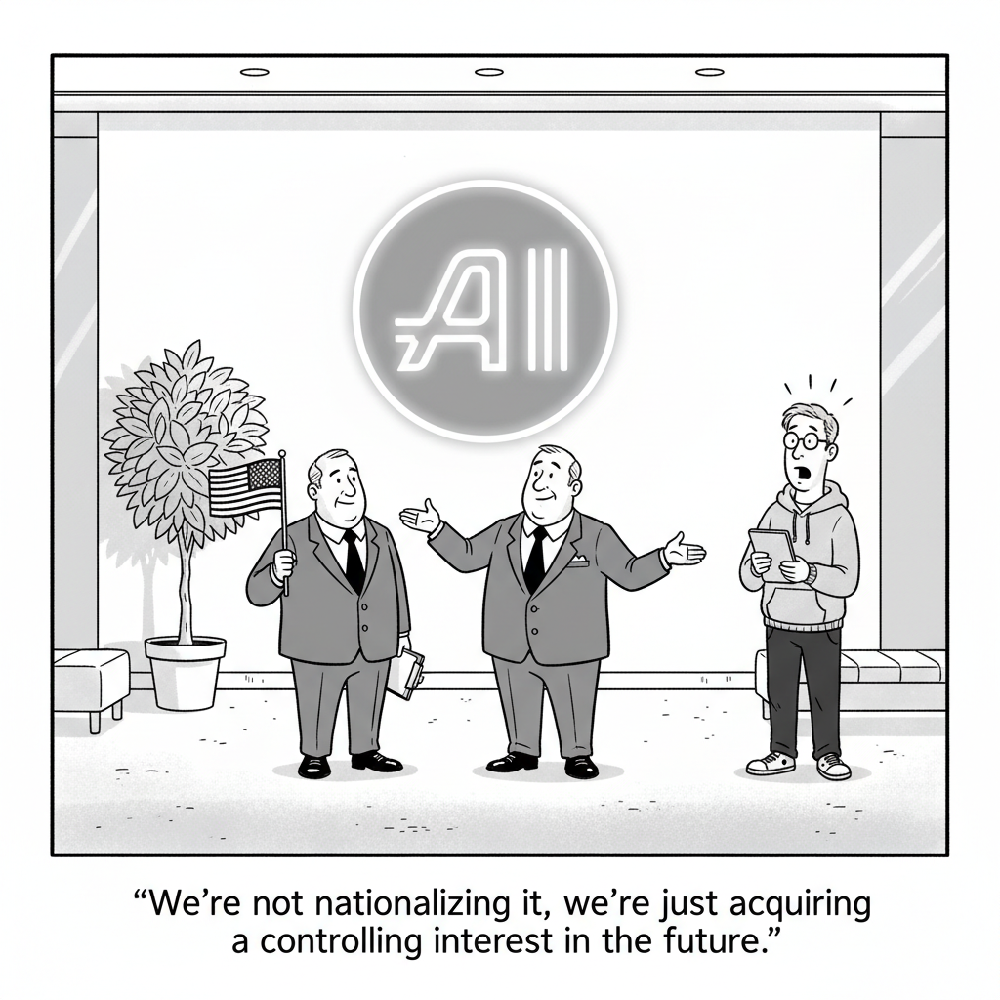

President Trump has signaled that his administration is in talks with AI companies about deals that would let "the American people" share in the industry's upside, and reporting points to an equity stake in OpenAI as the leading candidate. The proceeds, in this framing, would seed a proposed Public Wealth Fund, turning a private frontier lab into a partial holding of the state.
It is a remarkable inversion of the usual relationship between Washington and Silicon Valley. Where the government has historically regulated AI from the outside, an equity stake would put it on the cap table, with all the conflicts and incentives that implies. Coming the same week that a top White House AI advisor announced his exit, it suggests the administration's AI strategy is shifting from policy toward ownership.
AI Policy · White House

"We're not nationalizing it, we're just acquiring a controlling interest in the future."
Former tech executive and venture capitalist Sriram Krishnan is departing the Trump administration at the end of June. He reportedly plans to set up an outside institution to keep shaping the administration's AI policy from beyond the West Wing, an exit that lands in the same week the White House is said to be weighing an ownership stake in OpenAI. The two stories together read as a strategy in transition, from advising the industry to investing in it.
OpenAI describes shipping an entire new product built by a team of Codex agents, with no manually written code, and what that did to the job of an engineer. The role shifts from writing code to designing environments, specifying intent, and building the feedback loops that let agents do reliable work. It is a concrete look at "agent-first" development from the inside, not the pitch deck.
Meta disclosed that at least 20,225 Instagram accounts were compromised through a flaw in its AI chatbot's account-recovery flow, which attackers abused to reset passwords on accounts without two-factor authentication. It is a sharp reminder that bolting a conversational assistant onto sensitive account plumbing creates a new attack surface, not just a friendlier help desk.
A Jane Street designer makes the case that prototyping features directly in code with Claude has overtaken the traditional mockup-in-Figma workflow. Rather than drawing a static approximation and handing it off, they iterate on the real, interactive thing, blurring the line between design and engineering. It is one of the more credible firsthand accounts of how AI is reshaping the design-to-build handoff.
Simon Willison released an alpha package, micropython-wasm, that runs sandboxed Python by pairing MicroPython with WebAssembly. The approach lets untrusted code execute with controlled memory, CPU, file, and network access while keeping state across calls, an increasingly important primitive as agents start writing and running their own code.
An interactive explainer digs into how large language models perform arithmetic using only matrices and vectors, with no notion of a number in the usual sense. The piece asks whether models recall memorized patterns, run an implicit algorithm, or simply emit the most plausible token, and uses the question of basic math to illuminate what "reasoning" inside a transformer really means.
A paper measuring token consumption across the ChatDev multi-agent framework finds that code review, not code generation, eats the majority of tokens, averaging 59.4% of the bill. The takeaway reframes where the cost of agentic software engineering really comes from: the expensive part is the automated refinement loop, not writing the first draft.
Acronym Quiz
Acronym Quiz
✦ The Big Picture
Aboard Air Force One on Friday, the President floated the idea that "pieces" of America's AI companies "could be given to the American public," and the reporting points to a government equity stake in OpenAI. The same week, OpenAI revealed that roughly three engineers shipped a product with 1,500 pull requests and a million lines of code without typing a single line themselves, and a Jane Street designer declared he now designs in Claude more than Figma. The thread connecting an issue this scattered is not a model launch. It is a single question, asked at two altitudes at once: when generation becomes nearly free, who owns the result, and who is left to check it?
Washington Moves From Regulator to Shareholder
An equity stake, not a rulebook. Trump told reporters he is discussing deals "where the American people can benefit from the success of AI," and CNBC reports the administration is specifically weighing an equity stake in OpenAI, with some of that equity potentially seeding a proposed Public Wealth Fund that would distribute upside to citizens. No dollar figure or percentage was disclosed, but the piece cites last year's 10% government stake in Intel as precedent. Sam Altman has reportedly been exploring government-ownership concepts since early 2025.
The idea has bipartisan gravity and a warning label. Senator Bernie Sanders has separately proposed a one-time 50% tax on firms like OpenAI, Anthropic, and xAI, payable in stock, to give the public "a direct role." David Sacks cautioned the arrangement could "accelerate the corporate-government fusion we're already sliding toward" - a notable hedge from inside the administration's own orbit.
The policy shop is reshuffling at the same moment. Sriram Krishnan, the senior White House AI advisor and former a16z partner, is leaving at the end of June. Per the Washington Post, he plans to start an outside institution focused on energy, data centers, and "a clear path for Americans to experience the benefits of AI," continuing to shape policy from outside government. An advisor exits as the strategy pivots from advising the industry to owning a slice of it.
▶Listen to the Digest~7 min
Generation Goes to Zero, and the Job Moves
OpenAI's "harness engineering" is the role rewritten. Over five months, a small team shipped an internal product with about 1,500 merged pull requests and roughly a million lines of code - application logic, CI config, observability, docs - with zero manually written code, in an estimated tenth of the usual time. The new craft is not writing code but building the harness: a deliberately short AGENTS.md (~100 lines) that maps to deeper sources of truth, enforced dependency layers (Types to Config to Repo to Service to Runtime to UI), and agent traces frozen into JSONL evals so behavior can be regression-tested. As Martin Fowler put it, the work is encoding "context engineering, architectural constraints, and garbage collection" into artifacts the agents consume.
Design collapses into the same loop. Jane Street's Edwin Morris argues that prototyping a working feature in Claude beats a Figma mockup because it is evaluable: "by using Claude to make these ideas real I'm making it a lot easier for others to evaluate them, they can just use it." His JSQL Input feature was refined as real, running software - Submit button, shortcuts, the underlying prompt - not as comps. He is candid about the cost: colleagues receive "fully baked features" rather than open proposals, which can erode shared ownership, and he worries the build-it-now reflex could crowd out early divergent thinking.
So where does the money actually go? Verification. A new arXiv "Tokenomics" study of 30 tasks run through the ChatDev framework on a GPT-5 model finds the Code Review stage consumes 59.4% of tokens on average - the bill comes from automated refinement, not initial generation. Input tokens dominate at 53.9%, a sign of agents passing around excessive context. The expensive part of agentic engineering is checking the work, not doing it.
When Output Is Cheap, Scrutiny Is the Scarce Input
Running untrusted code becomes a first-class primitive. Simon Willison's alpha micropython-wasm runs sandboxed Python by compiling MicroPython to WebAssembly and executing it through wasmtime, with memory caps, CPU throttled via "fuel" metering (default 20 million units), no direct sockets, and tightly scoped filesystem access. A clever touch keeps state alive across calls so an agent can build up variables over a session. It is prototyping-grade, but it is exactly the containment layer you need once models write and run their own code.
The AI-on-AI attack surface is already live. Meta confirmed 20,225 Instagram accounts were compromised when its AI-assisted account-recovery flow sent password-reset links to attacker-supplied email addresses it should have rejected. The exploit only worked on accounts without two-factor authentication and ran from roughly April 17 to early June; once in, attackers had full access to DMs, contacts, and profile data. Meta's framing - "the tool itself worked properly," undone by "a bug in a separate code path" - is precisely the seam where a conversational layer meets sensitive plumbing.
Even arithmetic turns out to be approximation, not algorithm. Alvaro Videla's interactive teardown shows transformers encode numbers geometrically in a "helix" of activations rather than as digits, and lean on learned shortcuts that break under stress: subtraction accuracy holds above 96% at six digits but collapses to 6.7% at twenty-four, and deep-carry counting fails almost 97% of the time. The model "has matrices, activations, and learned geometry," not fingers or an abacus - a reminder that fluent output can mask the absence of a real procedure underneath.
The Throughline
Two years of AI coverage measured the field in capability deltas - bigger models, higher benchmarks, longer context. This issue measures it in something else entirely: ownership and accountability. At the top of the stack, the U.S. government is contemplating a literal seat on OpenAI's cap table, and a senior advisor is leaving to influence that strategy from the outside. At the bottom, individual engineers and designers are discovering that the act of producing software - the thing the whole industry organized itself around - has been quietly automated out from under them. These look like unrelated stories. They are the same story told from opposite ends.
The connective tissue is what happens to value when generation becomes nearly free. OpenAI's harness experiment and Jane Street's design workflow both show the human contribution migrating away from production and toward specification, constraint, and judgment. The Tokenomics paper puts a number on the consequence: when an agent can write a million lines, the cost - 59.4% of it - moves to reviewing them. That is not a quirk of one framework; it is the economic shape of a world where output is cheap. The scarce resource is no longer the code. It is the confidence that the code is right, safe, and yours.
And that is why the security and interpretability stories belong in the same issue as the policy ones. Meta's breach is what happens when a generative layer is wired into a system nobody fully verified. Willison's sandbox is an attempt to make untrusted generation survivable. Videla's arithmetic study is a warning that even when the answer looks right, there may be no algorithm beneath it - only a geometry that happens to land close. Each is a different instrument pointed at the same problem: in an economy of effortless output, scrutiny is the only thing that still has to be earned. Government equity is just that question scaled to the level of the nation-state: if AI is going to generate enormous value, who audits, owns, and answers for it?
The Bigger Picture
The AI industry is leaving the phase where intelligence was the binding constraint and entering one defined by ownership, governance, and trust. None of those photograph well in a launch keynote, which is exactly why they were underpriced for so long. A government weighing an equity stake, a designer worried his finished prototypes rob colleagues of ownership, a token bill dominated by review rather than creation - these are all symptoms of the same maturation. The question has shifted from "can the model do it?" to "who is responsible for what it did?"
That shift rewards a specific posture. The organizations positioned for the next two years are the ones building harnesses, not just prompts - the constraints, evals, sandboxes, and review loops that make cheap generation trustworthy. OpenAI is turning that discipline into an internal methodology; Jane Street is turning it into a design practice; the Tokenomics researchers are turning it into a cost model. The laggards are the ones still treating more output as more value, and discovering through breaches like Meta's, or failures like deep-carry arithmetic, that volume without verification is a liability, not an asset.
Underneath it all sits the governance question the Air Force One remarks made unavoidable. Once a technology generates value at this scale and this speed, the public, through its government, starts asking for a share and a say. Whether that arrives as equity stakes, stock-payable taxes, or something not yet invented, the era of AI as a purely private project is closing. David Sacks's unease about "corporate-government fusion" is the honest version of the tension: the same forces that could democratize AI's upside could also entangle the state in the companies it is supposed to oversee. The meter, the audit, and the cap table are all converging on one idea - generation was the easy part.
What to Watch
Whether the OpenAI stake gets a number. The concept is public; the structure is not. Watch for an actual percentage, a Public Wealth Fund mechanism, or pushback from OpenAI's existing investors - any of which would turn a trial balloon into precedent for how Washington takes positions in frontier labs.
Harness engineering escaping OpenAI. If "design the environment, not the code" becomes a named discipline with tooling and job titles, the Tokenomics finding (review is the cost center) predicts where the next wave of developer tools will aim: evals, verification, and agent supervision rather than autocomplete.
The conversational-layer attack surface. Meta's recovery-flow bug is unlikely to be the last. As assistants get wired into account recovery, payments, and admin actions, watch for more breaches that exploit the seam between a generative interface and the sensitive system behind it.